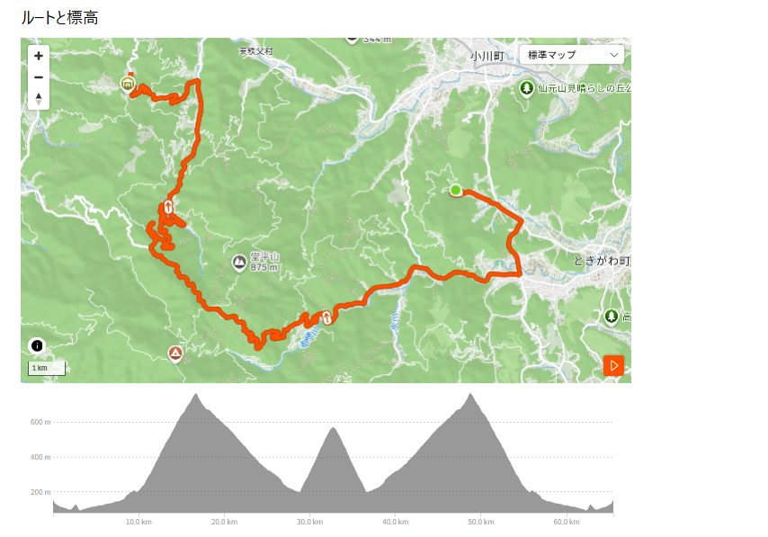
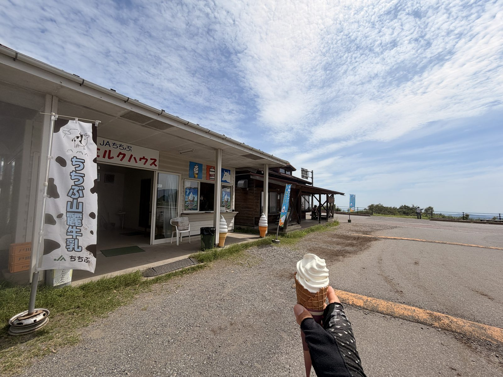
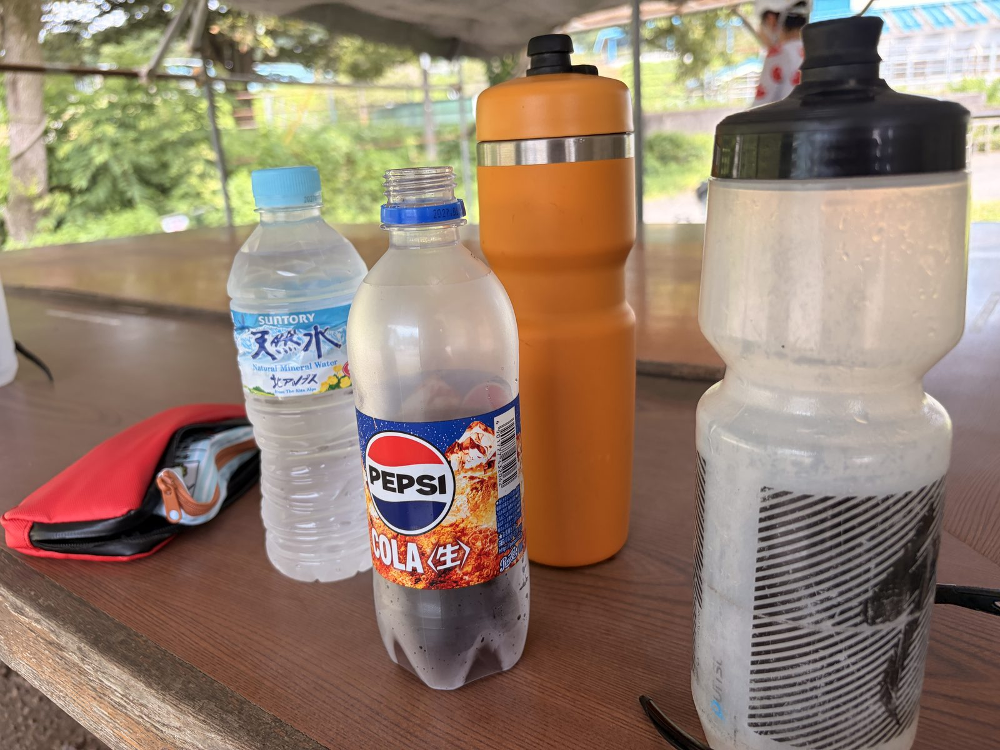
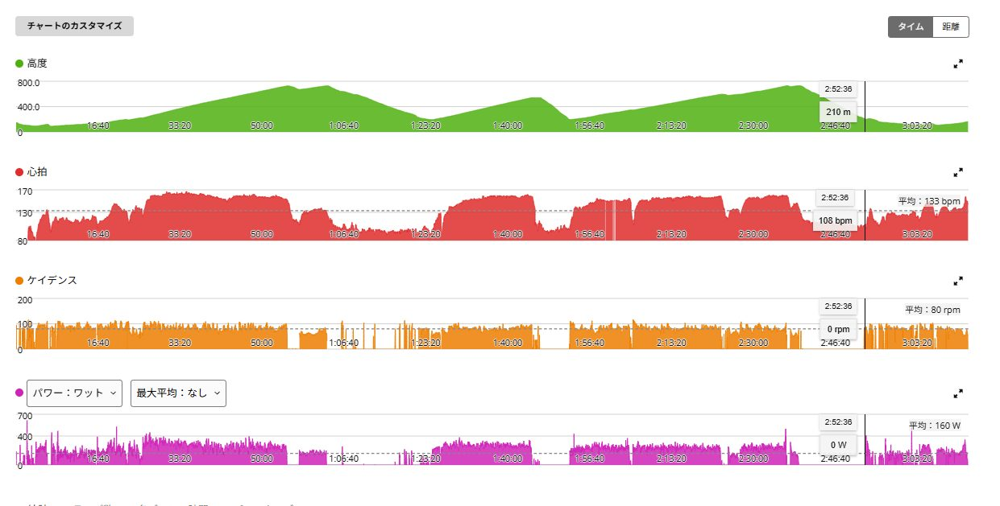
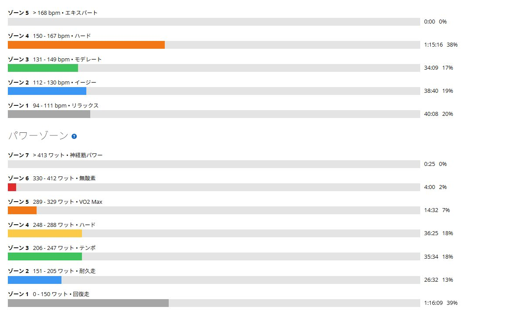

白石29分16秒で終わらない。定峰、裏白石、登り返しまで詰め込んだ真夏の一日
今日は佐野から自走ではなく、白石周辺まで車載。現地から白石峠の表側、定峰、ふれあい牧場方面、そして裏白石を何度も登った。
白石は29分16秒。ただし、この日の中身はその一本だけではない。友人と合流するための登り返しと、ゴール後にたくさん分けてもらった補給まで含めて、かなり密度の高い一日になった。

車載で白石周辺へ。最終的にはAethos2で走った
最初はAethos2のブレーキパッドがなかったため、ANCHOR RNC7で行くつもりだった。前日にRNC7で唐沢まで軽く走り、久しぶりの外走行で感触も確かめている。RNC7はRNC7で好きだし、今後もレストの日には外へ連れ出したい。
ただし今回は登りだけでなく長い下りも何度もある。白石、定峰、ふれあい牧場、裏白石を一日でつなぐなら、普段から外で乗り慣れているAethos2を使いたい。ブレーキパッドを交換してもらい、制動力を確認したうえでAethos2を選んだ。結果として、この判断は正解だった。
68.10km・獲得1,738m・TSS205.9
走行距離は68.10km、走行時間は3時間13分40秒、経過時間は4時間08分55秒。獲得標高1,738m、平均160W、NP220W、IF0.800、TSS205.9だった。平均心拍133bpm、最大167bpm、平均ケイデンス80rpmで、最大20分平均は279W。
高低図には大きな山が何度も出てくる。最初が白石表側、その後に定峰、ふれあい牧場方面、さらに裏白石を繰り返した。友人との合流のために一度下って登り返した区間もあり、単純な周回より変化の多いルートだった。

まずは白石表側、29分16秒・276W
白石峠の表側は29分16秒、平均276W、NP271W。平均心拍158bpm、最大167bpm、平均ケイデンス86rpm、獲得501mだった。今回はタイムアタックではなく、280W前後で30分ほどを目安にしたトレーニングベースの登りだった。
実際にはFTP設定275Wとほぼ同じ276Wで29分16秒。完全に余裕を残したわけではないが、最初から全開で突っ込んで後半に崩れたわけでもない。平均86rpmで、低ケイデンスで無理に押し切るより回しながら踏めた。トレーニングとしてはかなり良い落とし所だったと思う。
白石で終わらず、定峰も18分19秒・272W
白石を下った後の定峰は18分19秒、平均272W、NP270W。平均心拍152bpm、最大162bpm、平均ケイデンス82rpm、獲得319mだった。白石276Wとの差はわずか4W。
白石を29分間ほぼFTP付近で登った後に、定峰でも18分以上近い出力を揃えられた。この日の価値は白石29分16秒だけではない。最初の一本で使い切らず、その後の登りでも踏めたことの方が、富士ヒルへ向けた練習としては大きかった。
ふれあい牧場へ。見た目は観光、内容は高負荷
白石と定峰を越えて、ふれあい牧場方面へ進んだ。空には大きな夏雲。友人たちの自転車を並べて写真を撮ると、景色だけならかなり爽やかだった。実際の身体は白石と定峰でしっかり踏み、気温も上がっている。
ここからさらに裏白石が残っていた。牧場の景色とGarminの負荷の差が大きい。見た目は観光だが、内容は高負荷だった。
ミルクハウスのソフトクリーム
ふれあい牧場ではミルクハウスでソフトクリームを食べた。白石と定峰の後に入る冷たさと甘さは、普通に食べるより何倍もありがたい。真夏の山では、おやつというより立派な補給だった。
ソフトクリームを食べながら景色を眺めていると、少しだけライドが終わったような気分になる。もちろん終わっていない。むしろ後半戦はここからだった。

牧場で水とコーラを補給して後半へ
写真に写っている水、ペプシ、ボトルは、牧場に着いたときに補給したもの。白石と定峰を越えた後で、ここから裏白石へ向かう前の補給だった。
ソフトクリームに加えて水分と糖分も入れた。コーラの糖分とカフェイン、冷たさが一気に入り、暑さで消耗してきた身体を後半へ切り替える助けになった。

後半は裏白石を3本
後半は裏白石を3本登った。1本目は10分41秒・235W、2本目は17分22秒・238W、3本目は9分05秒・243W。3本合計は約37分08秒で、時間加重平均は約238Wだった。
出力は235W、238W、243Wと少しずつ上がっている。白石表側と定峰ほどの出力ではないが、すでに脚を使い、気温も上がり、牧場のソフトクリームを挟んだ後半だった。疲れて一方的に落ちず、最後まである程度まとめられたことに意味がある。
途中まで下って友人と合流し、また登った
この登り返しは、予定していた登坂ではない。友人のひとりと合流するために一度途中まで下り、合流後にまた登り返した。効率だけを考えれば完全に余計な登りで、すでに白石、定峰、裏白石を走った後なら、普通は登りを増やしたくない。
それでも友人と一緒に走るためなら下る。そして当然、また登る。この登り返しは純粋な裏白石3本の集計には含めていないが、身体への負荷と獲得標高には加わっている。今回の1,738mは、計画した登りだけでなく、グループライドだから増えた標高でもあった。
真夏の後半、パワー以上に心拍が上がった
裏白石は235Wで平均心拍147、238Wで155、243Wで156だった。出力の上昇以上に心拍が上がっており、疲労だけでなく体温上昇と脱水の影響も大きかったと思う。白石表側の時点では29℃だったが、後半には33〜36℃の区間もあった。
心拍ゾーン4は1時間15分16秒。パワー248W以上は合計55分を超えた。序盤と後半では、同じパワーでも身体への負担が違う。走行中は牧場で写真の水やコーラ、ソフトクリームを補給し、友人たちから別に補給を分けてもらったのはゴール後だった。

Aethos2で来てよかった
前日にRNC7へ乗ったことで、Aethos2との違いを改めて感じていた。RNC7は重く反応も穏やかだが、それはそれで好きだ。レストの日にゆっくり走るなら、その乗り味が合う。
ただし今回のように白石表側、定峰、裏白石、登り返し、長い下りを一日で走るなら話は別だった。Aethos2の軽さと慣れた感触は大きい。交換直後のブレーキパッドも問題なく、登りの軽さだけでなく下りで安心できたことも大きかった。左右バランスは51％／49％で、ペダリングも大きく偏らなかった。
ゴール後は友人たちから補給を分けてもらった
友人たちからポカリ、アクエリ、補給食をいただいた。平均気温32.2℃、最高40℃、推定発汗量2,791mlで、ゴール時点では身体からかなり水分が抜けていたはずだ。
ごめん、僕はなにも用意してないんだ・・・今度はなんか持って行こうと強く思いました。
Garminはオーバーリーチ。それでも今日は狙った高負荷
有酸素トレーニング効果は5.0、Garmin判定はオーバーリーチ、TSSは205.9。これは軽いライドではない。ただしオーバーリーチだから失敗というわけでもない。今日は大きな負荷を入れる日だった。
白石でFTP付近、定峰でも近い出力、その後は暑さと疲労の中で裏白石を繰り返し、友人との合流のために登り返した。一日全体で見れば、かなり濃い登坂耐久の練習になっている。次はさらに積むより、睡眠、水分、食欲、脚の重さを見ながら回復させることが重要になる。

今回やってみて思ったこと
白石29分16秒は分かりやすい成果だった。ただ、今日の本当の収穫はその後にある。白石276W、定峰272W、裏白石3本。途中まで下って友人と合流し、また登る。
単発のタイムだけを狙う日ではなく、長く踏み続ける濃い一日だった。それにしても疲れた。
自分用メモ
- 全体68.10km / 3時間13分40秒 / 獲得1,738m
- 負荷NP220W / IF0.800 / TSS205.9 / 有酸素TE5.0
- 白石表側29分16秒 / 276W / NP271W / 158bpm / 86rpm
- 定峰18分19秒 / 272W / NP270W / 152bpm / 82rpm
- 裏白石3本約37分08秒 / 時間加重平均約238W / 235→238→243W
- 暑さ平均32.2℃ / 最高40℃ / 推定発汗量2,791ml
- 回復翌日の脚、睡眠、食欲、水分、心拍の戻りを確認する